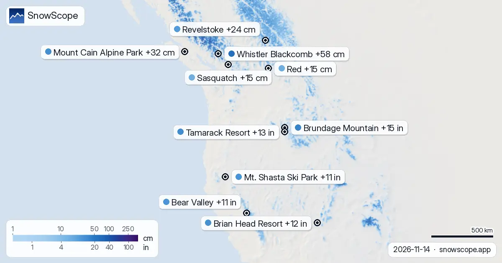

Où tombera le plus de neige en 72 heures : La Grave +61 cm (14 novembre)
Où aller ces prochains jours ? Voici les stations où la prévision annonce le plus de neige fraîche dans les 24 prochaines heures et jusqu'au 17 novembre, en Europe, au Maroc et en Amérique du Nord, avec la limite pluie-neige. Sur le terrain, la première chose que nous regardons, c'est l'ombre : la neige tient là où le soleil n'arrive pas.
Consultez les prévisions neige en temps réel pour La Grave sur l'application SnowScopeHauteurs de neige, alertes poudreuse et carte 3D, gratuitement.
Europe et Maroc
La Grave (France) attend 26 cm dans les 24 heures et 61 cm sur 72 heures, avec la limite pluie-neige vers 2 900 m. À Alpe d'Huez Grand Domaine (France) : 27 cm dans les 24 heures, 55 cm en 72 heures, limite pluie-neige autour de 2 400 m. Orcières Merlette (France) attend 30 cm dans les 24 heures et 53 cm sur 72 heures, avec la limite pluie-neige vers 2 500 m.
| # | Station | Région | +24 h | +72 h | Limite pluie-neige |
|---|---|---|---|---|---|
| 1 | La Grave | Alpes · France | 26 cm | 61 cm | 2 900 m |
| 2 | Alpe d'Huez Grand Domaine | Alpes · France | 27 cm | 55 cm | 2 400 m |
| 3 | Orcières Merlette | Alpes · France | 30 cm | 53 cm | 2 500 m |
| 4 | Les Deux Alpes | Alpes · France | 25 cm | 53 cm | 2 500 m |
| 5 | Saint François Longchamp | Alpes · France | 28 cm | 52 cm | 2 400 m |
| 6 | Courmayeur | Alpes · Italie | 16 cm | 48 cm | 2 400 m |
| 7 | Les Grands Montets | Alpes · France | 14 cm | 48 cm | 2 500 m |
| 8 | Orelle | Alpes · France | 14 cm | 48 cm | 2 500 m |
| # | Station | Région | +24 h | +72 h | Limite pluie-neige |
|---|---|---|---|---|---|
| 1 | Brundage Mountain | Ouest américain · États-Unis | 0 in (0 cm) | 15 in (37 cm) | 6 900 ft (2 100 m) |
| 2 | Tamarack Resort | Ouest américain · États-Unis | 0 in (0 cm) | 13 in (33 cm) | 6 900 ft (2 100 m) |
| 3 | Brian Head Resort | Ouest américain · États-Unis | 0 in (0 cm) | 12 in (30 cm) | 12 500 ft (3 800 m) |
| 4 | Mt. Shasta Ski Park | Ouest américain · États-Unis | 9 in (23 cm) | 11 in (27 cm) | 5 600 ft (1 700 m) |
| 5 | Bear Valley | Ouest américain · États-Unis | 0 in (0 cm) | 11 in (27 cm) | 9 200 ft (2 800 m) |
| 6 | Dodge Ridge | Ouest américain · États-Unis | 0 in (0 cm) | 9 in (23 cm) | 9 200 ft (2 800 m) |
| 7 | Sun Valley | Ouest américain · États-Unis | 0 in (0 cm) | 9 in (23 cm) | 7 200 ft (2 200 m) |
| 8 | Ferguson Ridge | Ouest américain · États-Unis | 1 in (3 cm) | 8 in (20 cm) | 8 200 ft (2 500 m) |
| # | Station | Région | +24 h | +72 h | Limite pluie-neige |
|---|---|---|---|---|---|
| 1 | Whistler Blackcomb | Ouest canadien · Canada | 47 cm | 58 cm | 1 200 m |
| 2 | Mount Cain Alpine Park | Ouest canadien · Canada | 15 cm | 32 cm | 1 100 m |
| 3 | Revelstoke | Ouest canadien · Canada | 5 cm | 24 cm | 1 500 m |
| 4 | Red | Ouest canadien · Canada | 4 cm | 15 cm | 1 500 m |
| 5 | Sasquatch | Ouest canadien · Canada | 0 cm | 15 cm | 1 500 m |
| 6 | Mt. Baldy Family | Ouest canadien · Canada | 6 cm | 13 cm | 1 400 m |
| 7 | Whitewater | Ouest canadien · Canada | 3 cm | 13 cm | 1 500 m |
| 8 | Kicking Horse Resort | Ouest canadien · Canada | 2 cm | 13 cm | 1 600 m |

États-Unis
À Brundage Mountain (États-Unis) : 0 in (0 cm) dans les 24 heures, 15 in (37 cm) en 72 heures, limite pluie-neige autour de 6 900 ft (2 100 m). Tamarack Resort (États-Unis) attend 0 in (0 cm) dans les 24 heures et 13 in (33 cm) sur 72 heures, avec la limite pluie-neige vers 6 900 ft (2 100 m). À Brian Head Resort (États-Unis) : 0 in (0 cm) dans les 24 heures, 12 in (30 cm) en 72 heures, limite pluie-neige autour de 12 500 ft (3 800 m).
Canada
Whistler Blackcomb (Canada) attend 47 cm dans les 24 heures et 58 cm sur 72 heures, avec la limite pluie-neige vers 1 200 m. À Mount Cain Alpine Park (Canada) : 15 cm dans les 24 heures, 32 cm en 72 heures, limite pluie-neige autour de 1 100 m. Revelstoke (Canada) attend 5 cm dans les 24 heures et 24 cm sur 72 heures, avec la limite pluie-neige vers 1 500 m.
À quoi s'attendre ensuite
Nous plaçons la limite pluie-neige environ 300 m sous l'isotherme 0 °C prévu. Skiez au-dessus pour une neige sèche ; en dessous, attendez-vous à de la neige mouillée ou de la pluie.
Un mot sur les chiffres : les valeurs des stations de ski sont une estimation de notre modèle pour le haut du domaine, alors que chaque station de mesure mesure un seul point à la date indiquée.
Les prévisions à quelques jours peuvent changer : regardez à nouveau la carte la veille du départ.
Conseils aux skieurs
- La neige neuve ne reste pas neuve longtemps. Partez tôt, tant qu'elle est encore douce et sans traces.
- De l'air au-dessus de 0 °C sur la station, c'est de la soupe en bas. Montez haut et organisez la journée autour des remontées du sommet.
- Avant le hors-piste ou la randonnée, lisez le bulletin d'avalanche officiel (liens ci-dessous).
- De la neige sur la carte ne veut pas dire que la station est ouverte : vérifiez remontées et dates d'ouverture sur son site.
- Activez une alerte poudreuse dans l'app SnowScope pour savoir quand La Grave reçoit de la neige fraîche.
À propos de ces chiffres
Les hauteurs de neige des stations sont la neige la plus épaisse sur le haut du domaine, d'après le modèle de neige SnowScope (environ 1 km, calcul du 14 novembre) ; ce sont des estimations pour une zone, pas une mesure en un point. Les valeurs des stations de mesure sont mesurées à la date indiquée. Les prévisions peuvent changer. Consultez toujours le bulletin d'avalanche officiel avant le hors-piste.
Bulletins d'avalanche officiels: EAWS (Europe) · avalanche.org (US) · Avalanche Canada
Citer ce bulletin
Pour la recherche, l'enseignement ou la presse : chiffres et graphiques réutilisables librement sous CC BY 4.0 avec cette citation.
SnowScope (2026), Où tombera le plus de neige en 72 heures : La Grave +61 cm (14 novembre), https://snowscope.app/blog/fr/2026/11/where-most-snow-falls-next-72-hours-14-november-2026.html, consulté le 2026-11-14
SnowScope (Atlas Labs). (2026, November 14). Où tombera le plus de neige en 72 heures : La Grave +61 cm (14 novembre). SnowScope snow reports. https://snowscope.app/blog/fr/2026/11/where-most-snow-falls-next-72-hours-14-november-2026.html
BibTeX
@misc{snowscope2026wheremostsnowfallsnext72,
author = {{SnowScope (Atlas Labs)}},
title = {Où tombera le plus de neige en 72 heures : La Grave +61 cm (14 novembre)},
year = {2026},
month = nov,
howpublished = {\url{https://snowscope.app/blog/fr/2026/11/where-most-snow-falls-next-72-hours-14-november-2026.html}},
note = {Published 2026-11-14 11:39 UTC; accessed 2026-11-14}
}· CC BY 4.0 · Méthodes, données et outils →
La Grave : neige et température selon l'altitude, cet hiver vs l'hiver dernier (outils) →
Suivre La Grave
Gratuit : un message quand la neige arrive, et la météo chaque matin.
Autres bulletins neige

Nos choix sont La Grave, Pfelders et Les Deux Alpes : nous avons regardé la hauteur de neige du jour, la neige fraîche des 72 dernières heures et la …

Surface enneigée : 49 467 sq mi (128 120 km²) le 11 novembre, 49 050 sq mi (127 040 km²) aujourd'hui, 64 429 sq mi (166 870 km²) prévus le 16 …